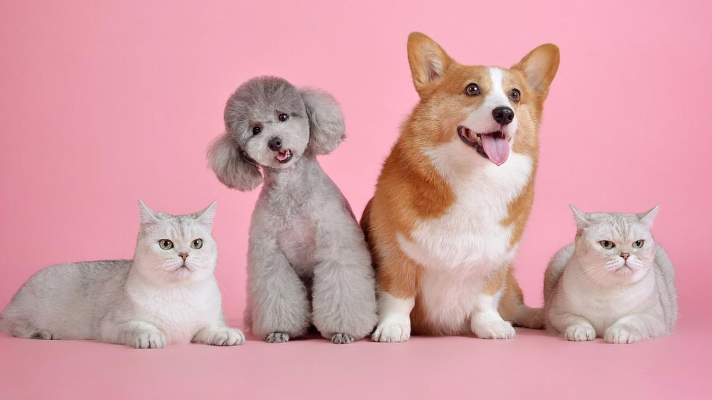

Mascotas
Las mascotas son animales que proporcionan su compañía. Estudios demuestran que el vínculo mascota-persona obtiene un papel importante en el aspecto psicológico y social.
Las mascotas proporcionan compañía, afecto y protección convirtiéndose en compañeros de vida con los cuales se forma un vínculo único.
Estos vínculos generan beneficios para las personas que varían según su edad. Los animales en el caso de los adultos ayudan a incrementar la actividad física de sus dueños, en el caso de los mayores otorga responsabilidad que les hace sentirse útiles y en el caso de los más pequeños son convierten en un soporte.